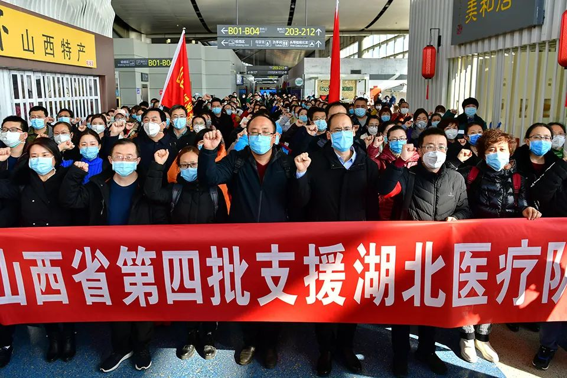
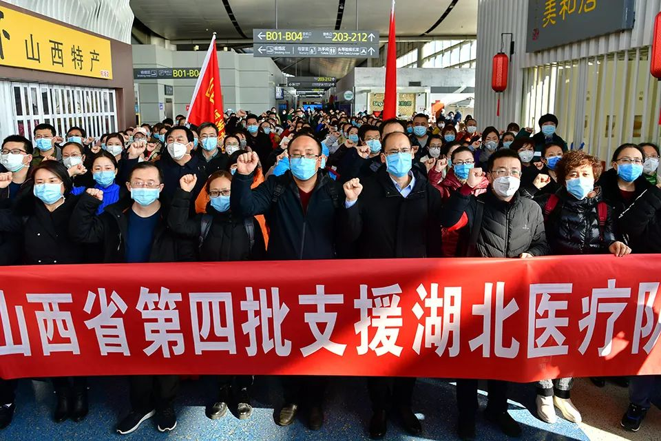

独家|中国疾控中心高福、冯子健回应论文风波
原文链接 备份链接 【财新网】（记者 赵今朝）新冠病毒疫情发展至今，多位专家对财新记者表示，防疫战接下来仍面对艰巨挑战，这与前期的防控错失“黄金窗口期”有关。错失良机责任何在？一篇论文引发轩然大波，中国疾控中心主任高福、副主任冯子健均在 …
 *************▲*************山西省第四批支援湖北医疗队的队员在出征仪式上宣誓（2月9日摄）。 （新华社记者 曹阳/图）
*************▲*************山西省第四批支援湖北医疗队的队员在出征仪式上宣誓（2月9日摄）。 （新华社记者 曹阳/图）
全文共2601字，阅读大约需要6分钟。
本文首发于南方周末 未经授权 不得转载
文 | 南方周末记者 张笛扬
责任编辑 | 钱昊平
带队援鄂一个月后，山西医疗队队长张晓清拟升任正厅级的山西省卫健委党组副书记。2020年3月1日，山西省委组织部发布了任前公示。这次提拔距离她上一次职务调整仅过了7个月，当时，张晓清从山西省人民医院党委书记转任山西省计划生育协会专职副会长（副厅级）。
抵达湖北后，山西省医疗队负责对口支援仙桃、天门、潜江三市。援鄂期间，张晓清曾通过视频连线，向山西省委书记楼阳生汇报工作情况，还接受了央视《新闻联播》节目组的采访。
像山西一样，疫情防控期间，多地“火线”提拔了在一线“表现突出”的干部，有的还是破格提拔。
“火线”提拔的依据是，中组部在防疫期间发出通知，要求注重在防控一线考察识别领导班子和领导干部，要大胆提拔使用表现突出、堪当重任的优秀干部。此后，多个省份据此相继出台文件，落实中组部的通知。
1
张晓清不是第一个被提拔的厅级干部。疫情发生后，第一个因防控表现突出被提拔的厅局级干部出现在天津。
2月10日，天津市卫健委副主任张富霞晋升为一级巡视员，天津市发改委经济贸易处处长郭春辉拟任副局级领导职务。
张富霞在疫情防控中主要负责组织开展疫情处置、流行病学调查等工作，而天津市的流行病学调查在近期广受赞誉。
因为对天津宝坻百货大楼的流行病学调查，天津市疾控中心传染病预防控制室主任张颖被网友称为“天津福尔摩斯”。2020年1月底，宝坻百货大楼出现聚集性疫情，致万人隔离，但前三例找不到任何流行病学上的关联性，张颖和她的团队从第五例确诊病例身上找到了答案。
随后，张颖也被“火线”提拔，出任天津市疾控中心副主任。
此次疫情中，天津提拔干部可谓是“大手笔”，2月28日，天津又提拔了5名厅级干部。
被提拔者都在疫情防控中表现突出，其中，天津市药监局局长王栩冬拟晋升为一级巡视员，天津市农委总兽医师李志荣拟任市政府工作部门副职，天津市红桥区住建委主任于鹏洲，拟任有关区区委常委。
另两人来自公安系统，天津市公安局出入境管理总队总队长任锋、公交治安分局局长都获任市政府部门副局级领导职务。
提拔厅级干部的还有江苏。2月17日，江苏省委组织部发布任前公示，担任江苏支援湖北医疗队总领队的邱泽森，拟由省卫健委二级巡视员转任省卫健委副主任。
任前公示专门提到，邱泽森在新冠肺炎疫情防控工作中表现突出。大年初一晚上7点22分，邱泽森带领首批江苏医疗队出发驰援湖北，定点支援武汉市江夏区人民医院。邱泽森接受媒体采访时表示，江苏的医疗队帮助对口医院提高了治愈率。
包括邱泽森在内，江苏省委组织部这次一口气提拔重用了5人，其中包括江苏对口支援黄石前方指挥部副总指挥吴红辉，吴红辉是江苏卫健委健康促进处处长，因在疫情防控工作中表现突出，拟任江苏省卫健委二级巡视员。
除了邱泽森和吴红辉外，江苏省卫健委副主任李少冬晋升为省卫健委一级巡视员，江苏省公安厅副厅长尚建荣拟任省公安厅常务副厅长，江苏省公安厅副厅长、南京市公安局局长常和平被推荐提名为南京市副市长人选。
在抗击疫情前线获提拔的也有不少湖北本地干部。2月24日，教育部任命王伟担任华中科技大学常务副校长。此前，王伟是华中科技大学附属同济医院院长。
华中科技大学附属同济医院地处武汉，是当地规模最大、医疗水平最高的医院之一。为抗击疫情，同济医院主动改造了两个院区，收治了两千多名重症、危重症患者。
2
像江苏、天津这样“火线”提拔厅局级干部的并不多见。疫情防控中被“火线”提拔的多为基层干部，以乡镇街道干部和基层民警居多。
被媒体称为全国首位“火线”提拔的干部是湖北省咸宁市崇阳县天城镇的罗浩。疫情发生后，当时还是四级主任科员的他，主要负责隔离观察人员的转运工作，自1月20日起的6天6夜里，他共护送三十多人到医院进行集中观察。每天早上6点钟出门，次日凌晨一两点钟才回办公室休息。2月初，罗浩被任命为天城镇党委委员。
在防控主战场武汉，截至2月21日，全市已提拔20名防控一线的基层干部。
“90后”女孩饶玥便是其中之一。饶玥原是武汉市江汉区民族街道党建办副主任，此次被提拔为街道党建办主任。疫情防控期间，饶玥组织完成街道辖区5500余户、1万余人的情况排查。在随后开展的综合协调和病人转运工作中，她所在街道每天都能完成确诊病人转送入院、疑似病人转送隔离点的“双清零”任务。
被提拔的“90后”为数不少，湖北省兴山县“90后”民警李希萌被火线提拔为南阳派出所副所长。苏州姑苏区双塔街道里河社区党委副书记胡晨被提拔为长岛社区党委书记，他也是一名“90后”。江苏常熟“90后”社区工作者袁静，2020年1月22日刚被任命为虞山街道报本社区党总支副书记，2月9日就被提拔为社区党总支书记。
3
苏州姑苏区的徐晓晨也因防疫工作表现突出，得到了“火线”提拔的机会，被任命为白湾街道玉景湾社区的党支部书记。
与一般被提拔者不同，徐晓晨属“破格”提拔，因为她的党龄还未满1年。据当地媒体报道，防疫期间，徐晓晨将两个孩子送到爷爷奶奶家，带头日夜奋战在抗疫一线，利用自己开发的一款微信小程序在社区发布信息、收集需求，组建了信息排查、门岗管控、服务保障等工作小组。
疫情防控期间像徐晓晨这样被破格提拔的干部已有多位，巧合的是，目前被媒体关注到的都是女性。
2月20日，吉林省长白山党工委组织部破格提拔杨涛为长白山疾控中心副主任。51岁的杨涛原为长白山疾控中心科员，疫情防控期间，她从1月23日起就没有休息过，在本组另一名同事骨折住院后独自承担起全组流行病学调查的工作。
2019年，杨涛就有被提拔的机会，但因学历问题在预审中未获通过，此次属于“突破学历限制予以破格重用”。
比杨涛年轻两岁的莫新艳，也突破了学历短板获得提拔。莫新艳是广西富川县疾控中心艾防科主任，在当地负责对疑似病例、确诊病例进行流行病学调查和密切接触者登记。
莫新艳此次被提拔担任八级管理岗位领导职务。只有在职大专学历的莫新艳本不符合提拔条件，富川县因此在任前公示上专门备注：“无大学学历，因在疫情防控一线表现特别优秀破格提拔，已报上级组织部门同意。”
此前，管辖富川的贺州市专门出台了文件，提出对在疫情防控中“表现特别突出、作出重大贡献的可破格提拔使用” 。
戳击下面图片 继续阅读专题


原文链接 备份链接 【财新网】（记者 赵今朝）新冠病毒疫情发展至今，多位专家对财新记者表示，防疫战接下来仍面对艰巨挑战，这与前期的防控错失“黄金窗口期”有关。错失良机责任何在？一篇论文引发轩然大波，中国疾控中心主任高福、副主任冯子健均在 …
原文链接 备份链接 *************▲*************1月24日，在武汉大学中南医院重症隔离病房，医生与病情好转的患者互道新春快乐。 （新华社记者 熊琦/图） 全文共*2120*字，阅读大约需要5分钟。 湖北至少 …
原文链接 备份链接 图片来源：视觉中国 记者：牛其昌 “ 随着国内新增确诊病例数明显减少，多地已纷纷下调疫情应急响应等级。但鉴于全球新冠肺炎疫情防控形势的严峻性，疾控部门已经把境外疫情评估纳入工作范畴。 ” 新冠肺炎疫情正在全球范围内加速 …
原文链接 备份链接 【财新网】（记者 张兰太）近期全国各地疫情逐渐得到控制，“重灾区”湖北、武汉疫情近日也出现积极变化，而海外疫情迅速蔓延，每日新增病例数连续超过国内，累计确诊病例数已经破万，严防海外疫情输入或“倒灌”风险成为全国各地疫情 …
原文链接 备份链接 原本约好的采访时间，民警高达爽约了。 四个半小时后，他才回复我：“不好意思，突然接到抓捕任务，才回来。” 高达要抓捕的是他所在辖区内一名因斗殴致人轻伤的“潜逃”青年。辖区地处云贵边境的山村，处理年轻人打架斗殴案件并不鲜 …